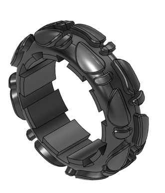

Bicycle-parking ecosystem — 1st runner-up (2nd place), S$2,400
For a hackathon on illegally parked and discarded bicycles, the instinct was to go to the site instead of guessing: we walked the neighbourhood, interviewed people, and gathered photo reference.
- The pain was not laziness — there was no good spot and no signal for free spots.
- So we built an ecosystem, not a gadget: a smart rack that lowers the friction of parking right and records parking duration; computer vision on the racks to flag long-parked or abandoned bikes; a mobile app to find racks and free spots.
- Placed 1st runner-up (2nd place), S$2,400. Event name, date, team members involved: [fill in with details later]
Further applications for this proof: [fill in with details later]
